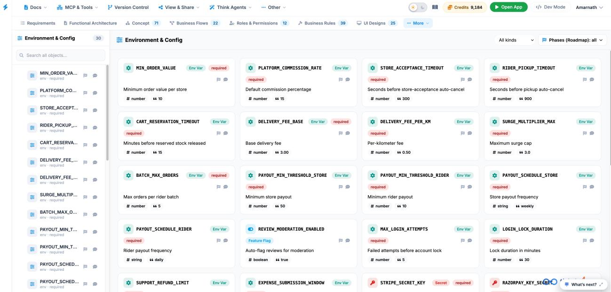

Environment & Config
The Environment & Config tab serves as the central management console for workspace variables, system parameters, feature toggles, and global application runtime settings.

Key UI Components
- Environment & Config Sidebar: Itemizes all 30 environment variables and configuration properties (such as MIN_ORDER_VALUE, PLATFORM_COMMISSION_RATE, STORE_ACCEPTANCE_TIMEOUT, RIDER_PICKUP_TIMEOUT, and CART_RESERVATION_TIMEOUT) with search capabilities.
-
Config Cards Grid: Interactive cards detailing individual runtime variables:
- Variable Name & Type Badge: Displays the key identifier along with category tags such as Env Var, Feature Flag, or Secret.
- Requirement Tag: Highlights mandatory fields with a required badge.
- Description & Value: Outlines the variable's purpose (e.g., Minimum order value per store, Seconds before store-acceptance auto-cancel) along with its configured data type (#number, #string, #boolean) and default value (e.g., 10, 300, true).
- Canvas Toolbar: Top-right controls including variable category filters (All kinds dropdown) and a Phases (Roadmap) selector.